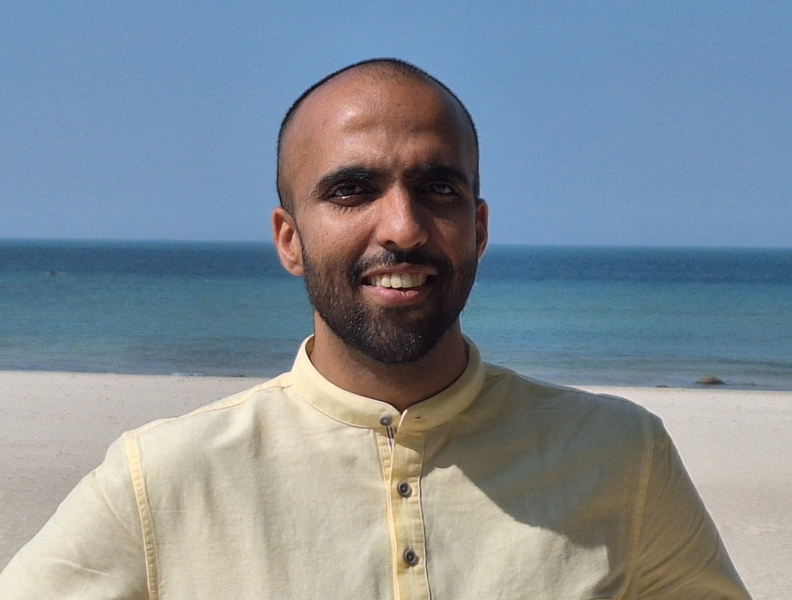

|  | Postdoctoral Researcher Contact: s(dot)n(dot)bhadane(at)uva(dot)nl. |
I am a postdoctoral researcher at the Korteweg-De Vries Institute (KdVI), University of Amsterdam working with Joris Mooij. I am also a member of the Mercury Machine Learning Lab, a collaboration between University of Amsterdam, Delft University of Technology and Booking.com. I graduated from the School of Electrical and Computer Engineering at Cornell University, where I was jointly advised by Aaron Wagner and Jayadev Acharya. In a past life, I was a BTech and MTech student in Electrical Engineering from Indian Institute of Technology, Madras and was fortunate to be advised by Andrew Thangaraj.
I am broadly interested in fundamental problems in causal inference, machine learning and information theory. Recent specific interests include applications of causal inference for reasoning about fairness and leveraging interventional data for causal discovery. During my PhD, I devoted a significant amount of time in understanding how stochastically-trained, artificial-neural-network-based (ANN-based) compressors perform well on multimedia sources.
[May ’25 ] I talked about my recent work on causal fairness at the Amsterdam Causality Meeting
[May ’25 ] Our paper on a causal fairness analysis of the Berkeley data was accepted to UAI 2025. Come find me at UAI for a chat about it!
[May ’25 ] I had a great time at CLeaR 2025. Congratulations to all the attendees and organizers for making it a success.
Sourbh Bhadane, Joris M. Mooij, Philip Boeken, Onno Zoeter,
“Revisiting the Berkeley Admissions data: Statistical Tests for Causal Hypotheses”.
Conference on Uncertainty in Artificial Intelligence, UAI 2025.
Jayadev Acharya, Sourbh Bhadane, Arnab Bhattacharyya, Saravanan Kandasamy, Ziteng Sun,
“Sample Complexity of Distinguishing Cause from Effect”. [Talk by Arnab at Simons Causality Program ]
Artificial Intelligence and Statistics, AISTATS 2023.
Sourbh Bhadane, Aaron B. Wagner, Johannes Ballé,
“Do Neural Networks Compress Manifolds Optimally?”.
Information Theory Workshop, ITW 2022.
Sourbh Bhadane, Aaron B. Wagner,
“On One-Bit Quantization”.
International Symposium on Information Theory, ISIT 2022.
Sourbh Bhadane, Aaron B. Wagner, Jayadev Acharya,
“Principal Bit Analysis: Autoencoding with Schur-Concave Loss”.
International Conference on Machine Learning, ICML 2021. [ ICML Talk ], [SCW Poster]
Aaron B. Wagner, Elaine L. Hill, Sean E. Ryan, Ziteng Sun, Grace Deng, Sourbh Bhadane, Victor Hernandez Martinez, Peter Wu, Dongmei Li, Ajay Anand, Jayadev Acharya, David S Matteson,
“Social Distancing merely stabilized COVID‐19 in the United States”.
Stat, 2020.
Jayadev Acharya, Sourbh Bhadane, Piotr Indyk, Ziteng Sun,
“Entropy Estimation of Distributions in Constant Space”.
Conference on Neural Information Processing Systems, NeurIPS 2019. [WOLA Talk],[ITA Poster]
Sourbh Bhadane, Andrew Thangaraj,
“Unequal Locality and Recovery for Locally Recoverable Codes with Availability”.
National Conference on Communications, NCC, 2017.
Akshay Gulati, Sourbh Bhadane, Joseph Samuel, Harishankar Ramachandran, R. David Koilpillai,
“IITMSAT : Innovative Packet Protocol and Concept of Operations”.
AIAA Conference on Small Satellites, SmallSat, 2016.
Jagdish M. Mevada, Joseph Samuel, Sourbh Bhadane, Akshay Gulati, R. David Koilpillai,
“Design and Implementation of a Robust Downlink Communication System for Nanosatellites”.
IEEE International Conference on Small Satellites, Iconspace, 2015.
Program Committee: Publication Chair - CLeaR 2024, 2025
Reviewing: UAI,NeurIPS,ICML,ICLR,AISTATS,ISIT,ITW,DCC.
Instructor
Statistics for Sciences (Spring 2024, 2025, Amsterdam Unviersity College)
Calculus (Fall 2024, Amsterdam University College)
Mathematics for Chemical Sciences (Fall 2023, University of Amsterdam)
MATH 112: Contemporary Mathematics (Spring 2022; Auburn Correctional Facility, Fall 2022; Five Points Correctional Facility)
I was an instructor of a Mathematics course for incarcerated students enrolled in community college via the Cornell Prison Education Program.
Teaching Assistant
ECE 2720: Data Science for Engineers (Spring 2022, Fall 2019, Cornell):
Grader
ECE 4200: Fundamentals of Machine Learning (Fall 2021, Fall 2020, Spring 2020, Spring 2019, Spring 2018, Cornell):
I had great fun creating four in-class Machine Learning competitions!
Check them out: Spoken Digit-Pair Recognition, Font Recognition, Modulation Prediction, Guilty or Not Guilty?.
ECE 5620: Fundamentals of Data Compression (Spring 2021, Cornell)